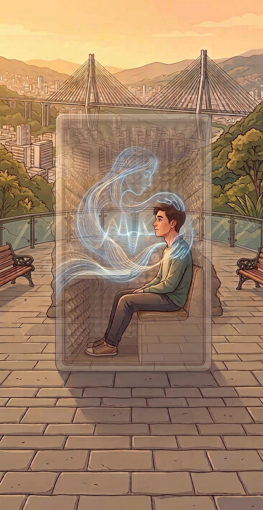

Comprensión empática
Escucha lo que quieres expresar
Comprende el lenguaje cotidiano y el contexto de la conversación para responder de forma clara, respetuosa y atenta a lo que estás viviendo.
Una presencia para el primer momento
L.U.Z. ofrece un espacio para poner en palabras lo que pasa, con calma y sin juicios. Su propósito es acompañar ese primer momento y ayudar a encontrar el siguiente paso.
Así se siente conversarL.U.Z. no reemplaza a un profesional. Está diseñado para contener el primer momento y derivar con seguridad.
TRES PILARES DE ACOMPAÑAMIENTO
La propuesta reúne comprensión del lenguaje, una experiencia fluida y límites claros para priorizar el bienestar de cada persona.
Comprensión empática
Comprende el lenguaje cotidiano y el contexto de la conversación para responder de forma clara, respetuosa y atenta a lo que estás viviendo.
Conversación fluida
Respuestas ágiles ayudan a mantener el hilo de la conversación, para que puedas seguir expresándote sin pausas incómodas.
Seguridad y ética
No diagnostica ni sustituye la atención profesional. Ante una situación que requiere más apoyo, su propósito es orientar hacia recursos y ayuda humana.
SIN PRESIÓN. SIN JUICIOS. A TU RITMO.
No tienes que encontrar las palabras perfectas ni resolverlo todo de una vez. L.U.Z. busca ofrecer un primer espacio para hablar, ordenar lo que sientes y reconocer opciones de apoyo.
Un primer paso acompañado, no un reemplazo de la ayuda profesional.

CONOCE EL RESPALDO DEL PROYECTO
Explora el contexto regional, las fuentes y el proceso detrás de L.U.Z.
Leer la Investigación